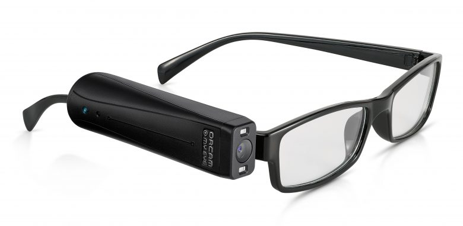
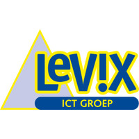
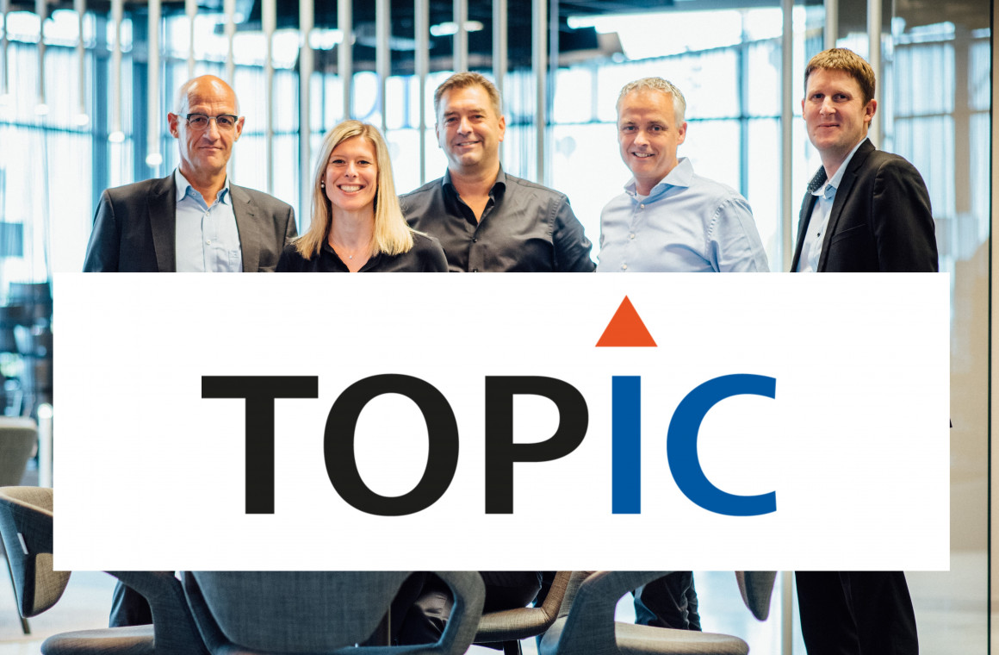
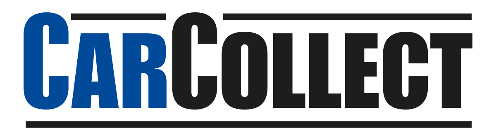
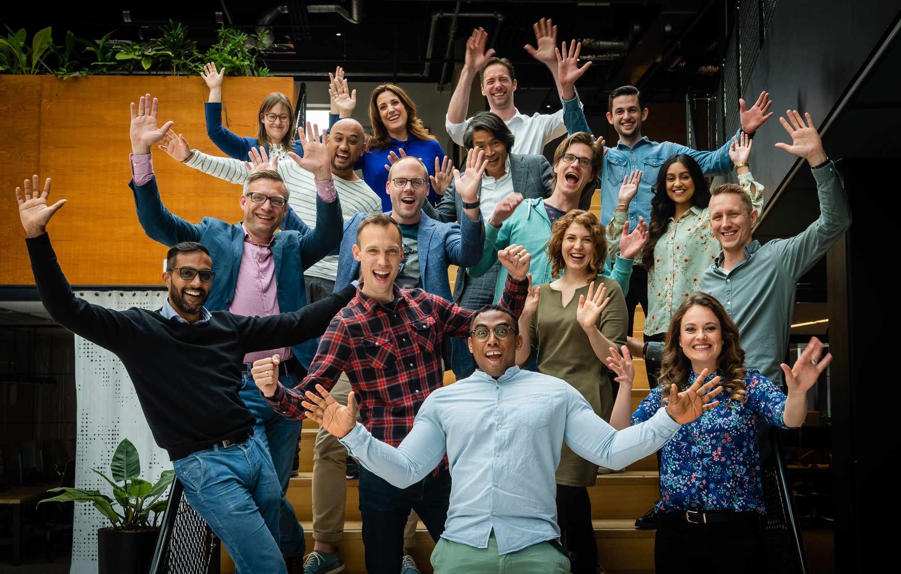

Babbage
Babbage levert IT-hulpmiddelen voor mensen met een beperking om hen te helpen met hun studie/werk. Babbage heeft verschillende IT rollen zoals software engineer en projectleider. De projectleider is het contactpersoon met de klant en is de eindverantwoordelijke. De software engineer is verantwoordelijk voor de software die geleverd wordt. Babbage ziet elke klant als een nieuw project en werken volgens de agile methode. De sfeer is informeel, maar er wordt wel hard gewerkt.
Faster Forward
Faster Forward maakt software voor financiële adviseurs. Er wordt veel samengewerkt onder een fijne sfeer en er wordt veel gebruik gemaakt van PHP.
Levix ICT-Groep
Levix is een totaal ICT-leverancier. Er worden diensten geleverd als hardware/software en ERP oplossingen. Er wordt gewerkt in een informele sfeer en tijdens de automatisering is er veel contact met de klant.
Topic Embedded Systems
Topic Embedded Systems garandeert een fijne informele werksfeer waar iedereen zich thuisvoelt en waar de collega's voelen als familie. Er is veel begeleiding en/of coaching.
CarCollect
CarCollect handelt in auto's. Hierbij hoort ook software. Deze wordt gemaakt in een klein team volgens de scrum methode. CarCollect is heel innovatief.
Macaw
Macaw heeft een erg goede sfeer. Het hele bedrijf is als een grote familie en er zijn regelmatig teamuitjes. Daarnaast werken ze heel hard en houden ze van nieuwe uitdagingen.
YourSurprise
YourSurprise werkt in een kleine groep aan softwares die gebruikt worden voor de verkoop en productie van producten. Dit gebeurd in een informele, maar toch serieuze sfeer.

VeraCode
VeraCode is een erg groot bedrijf wat over de hele wereld is gevestigd en zorgt voor de security. Het bedrijf is een grote familie en iedereen komt minimaal een keer per jaar bij elkaar.